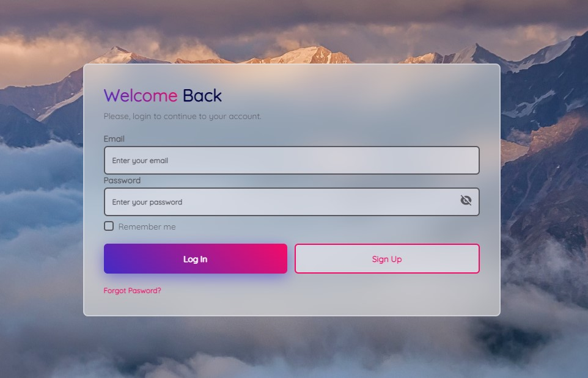

Login and registration form
A modern login and registrattion form using HTML, CSS ans JS. A blur backgound for a "glass" effect and some gradients.

I’m a forming front-end developer based in Argentina. I use HTML5, CSS5 and Javascript. Here I share my works and practices so far.
A modern login and registrattion form using HTML, CSS ans JS. A blur backgound for a "glass" effect and some gradients.
An e-commerce with shop cart, products, counter and delete buttons. Made with HTML, CSS and Javascritp.
Personal web design and communication strategist for a professional lawyer. Ruben Calcaterra is an outstanding lawyer, with a wide experience. He has participated in congresses and published several books on Conflicitology.
He needed to update his website to a more modern one, including a blog where he could post articles about his research, as well as contributions from colleagues and students.

ArteBaires is a meeting space to talk about art and disseminate the activities and workshops of the different artists that make up the network. My task is to keep the website and social networks updated, create monthly communication strategies and their corresponding content.
I'm Mariana Conti, I live in a small city called Santa Rosa de Calamuchita, in Córdoba, Argentina. I studied Social Communication at Córdoba University, but recently I decided to change course and get into web development. I'm taking courses at Educación IT and learning by my own.
My goal is to become a Front-end web developer, with a broad command of the relevant languages such as HTML, CSS and Javascript. In addition to being updated on the latest technologies and practices.
My previous career nourished me with knowledge that I consider very useful also in this field, since it trained me to develop effective communications that take into account all the people involved during the discursive process.
I'm taking courses in Educación IT to become a Front-end Web Developer. The career is aimed at becoming a Front-end Javascript developer expert in React.js.
It includes this courses: